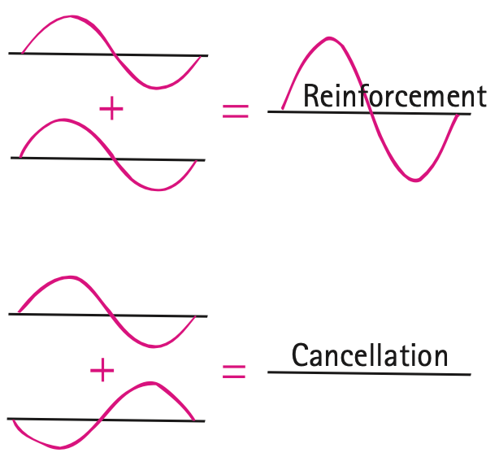
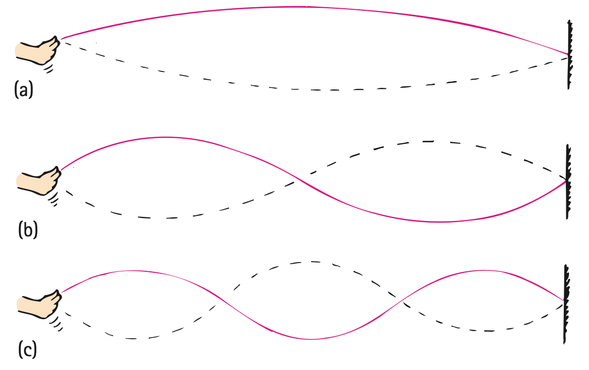

Wave Interference
Wave Interference
Whereas a material object such as a rock will not share its space with another rock, more than one vibration or wave can exist at the same time in the same space. If we drop two rocks in water, the waves produced by each can meet and produce wave interference. The overlapping of waves can form an interference pattern. Within the pattern, wave effects may be increased, decreased, or neutralized.
When more than one wave occupies the same space at the same time, the displacements add at every point. This is the superposition principle. So, when the crest of one wave overlaps the crest of another, their individual effects add together to produce a wave of increased amplitude. This is called constructive interference (Figure 19.10). When the crest of one wave overlaps the trough of another, their individual effects are reduced. The high part of one wave simply fills in the low part of another. This is called destructive interference.

Wave interference is easiest to see in water. In Figure 19.11 we see the interference pattern made when two vibrating objects touch the surface of water. We can see the regions where a crest of one wave overlaps the trough of another to produce regions of zero amplitude. At points along these regions, the waves arrive out of step. We say they are out of phase with each other.

Interference is characteristic of all wave motion, whether the waves are water waves, sound waves, or light waves. We will treat the interference of sound in Chapter 20 and the interference of light in Chapter 29.
Standing Waves
If we tie a rope to a wall and shake the free end up and down, we produce a train of waves in the rope. The wall is too rigid to shake, so the waves are reflected back along the rope. By shaking the rope just right, we can cause the incident and reflected waves to form a standing wave, where parts of the rope, called the nodes, appear to be standing still. Nodes are the regions of minimal or zero displacement, with minimal or zero energy. Antinodes (not labeled in Figure 19.12), in contrast, are the regions of maximum displacement and maximum energy. You can hold your fingers just over and under the nodes and the rope doesn't touch them. Other parts of the rope, especially the antinodes, would make contact with your fingers. Antinodes occur halfway between nodes.

Standing waves are the result of interference (and, as we will see in Chapter 20, resonance). When two sets of waves of equal amplitude and wavelength pass through each other in opposite directions, the waves are steadily in and out of phase with each other. This occurs for a wave that reflects upon itself. Stable regions of constructive and destructive interference are produced.
It is easy to make standing waves yourself. Tie a rope—or, better, a rubber tube—to a firm support. Shake the tube up and down with your hand. If you shake the tube with the right frequency, you will set up a standing wave, as shown in Figure 19.13a. Shake the tube with twice the frequency, and a standing wave of half the previous wavelength, having two loops, will result (Figure 19.13b). (The distance between successive nodes is a half wavelength; two loops constitute a full wavelength.) If you triple the frequency, a standing wave with one-third the original wavelength, having three loops, will result (Figure 19.13c); and so forth.

Standing waves are set up in the strings of musical instruments when they are plucked, bowed, or struck. They are set up in the air in an organ pipe, a trumpet, or a clarinet and the air of a soda-pop bottle when air is blown over the top. Standing waves can be set up in a tub of water or in a cup of coffee by sloshing the tub or cup back and forth with the right frequency. Standing waves can be produced with either transverse or longitudinal vibrations.
Figure 19.14 was omitted because no matching captured image was supplied.
Doppler Effect
Doppler Effect
A pattern of water waves produced by a bug jiggling its legs and bobbing up and down in the middle of a quiet puddle is shown in Figure 19.15. The bug is not going anywhere but is merely treading water in a fixed position. The waves it makes are concentric circles because the wave speed is the same in all directions. If the bug bobs in the water at a constant frequency, the distance between wave crests (the wavelength) is the same in all directions. Waves encounter point A as frequently as they encounter point B. This means that the frequency of wave motion is the same at points A and B, or anywhere in the vicinity of the bug. This wave frequency is the same as the bobbing frequency of the bug.

Suppose the jiggling bug moves across the water at a speed lower than the wave speed. In effect, the bug chases part of the waves it has produced. The wave pattern is distorted and is no longer made of concentric circles (Figure 19.16). The center of the outer wave was made when the bug was at the center of that circle. The center of the next smaller wave was made when the bug was at the center of that circle, and so forth. The centers of the circular waves move in the direction of the swimming bug. Although the bug maintains the same bobbing frequency as before, an observer at B would see the waves coming more often. The observer would measure a higher frequency. This is because each successive wave has a shorter distance to travel and therefore arrives at B more frequently than if the bug weren’t moving toward B. An observer at A, on the other hand, would measure a lower frequency because of the longer time between wave-crest arrivals. This is because, in order to reach A, each crest has to travel farther than the one ahead of it due to the bug’s motion. This change in frequency due to the motion of the source (or receiver) is called the Doppler effect (after the Austrian scientist Christian Doppler, 1803–1853).

Water waves spread over the flat surface of the water. Sound and light waves, on the other hand, travel in three-dimensional space in all directions, like an expanding balloon. Just as circular waves are closer together in front of the swimming bug, spherical sound or light waves ahead of a moving source are closer together and reach a receiver more frequently.
The Doppler effect is evident when you hear the changing pitch of an ambulance siren as it passes you. When the vehicle approaches, the pitch is higher than normal (like a higher note on a musical scale). This is because the crests of the sound waves encounter your ear more frequently. And when the vehicle passes and moves away, you hear a drop in pitch because the crests of the waves hit your ear less frequently.

The Doppler effect also occurs for light. When a light source approaches, there is an increase in its measured frequency; when it recedes, there is a decrease in its frequency. An increase in frequency is called a blue shift because the increase is toward the high-frequency (or blue) end of the color spectrum. A decrease in frequency is called a red shift, referring to a shift toward the lower-frequency (or red) end of the color spectrum. Distant galaxies, for example, show a red shift in the light they emit. A measurement of this shift permits a calculation of their speeds of recession. A rapidly spinning star shows red-shifted light from the side turning away from us and blue-shifted light from the side turning toward us. This enables astronomers to calculate the star’s spin rate.
Textbook Sections: 19.5, 19.6
Learning Target: Students will explain how waves interact through interference, standing waves, and the Doppler effect.
- I can explain constructive and destructive interference.
- I can interpret simple wave-superposition diagrams.
- I can describe how standing waves form.
- I can explain the Doppler effect as a change in observed frequency caused by relative motion.
- I can connect wave interactions to everyday examples such as sirens, stadium waves, slinkies, and strings.